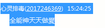
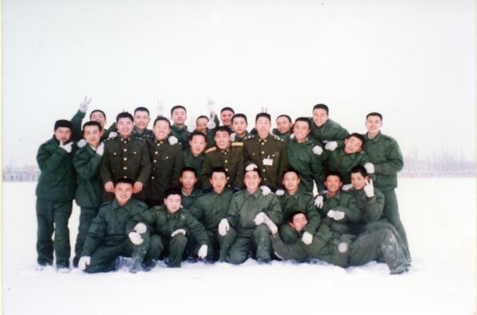

Conversation with 81184027 at Wed 28 May 2014 11:58:06 AM CST on 154115835 (webqq)
(11:50:09 AM) 自力: 额
(11:49:23 AM) 蔚蓝的天空: 遵从内心的真实声音
(11:49:41 AM) 福建-福州&水浒: 自己选择了
(11:49:50 AM) 福建-福州&水浒: 这有什么好纠结的
(11:50:09 AM) 自力: 额
(11:50:16 AM) 福建-福州&水浒: 我的意见留当地吧，
(11:50:17 AM) 自力: 没经验啊
(11:50:23 AM) 自力: 不是
(11:50:27 AM) 自力: 京东也是当地上班
(11:50:33 AM) 自力: 是京东的西南分公司
(11:50:47 AM) 自力: http://jobs.zhaopin.com/192921312269547.htm?ssidkey=y&ss=201&ff=03
(11:50:49 AM) 福建-福州&水浒: 那就了解他们企业文化
(11:51:06 AM) 福建-福州&水浒: 看适不适合你
(11:51:08 AM) 自力: 哦
(11:51:18 AM) 自力: 大公司我觉得
(11:51:28 AM) 福建-福州&水浒: 你的能力可否得到发挥
(11:51:38 AM) 自力: 哦
(11:52:53 AM) 福建-福州&水浒: 孟非还不是从印刷厂干起来滴，
(11:54:07 AM) 自力: 额。。。
(11:54:52 AM) 福建-福州&水浒: 我觉得工作没有贵贱之分
(11:56:59 AM) 自力: 恩
(11:50:09 AM) 自力: 额
(11:49:23 AM) 蔚蓝的天空: 遵从内心的真实声音
(11:49:41 AM) 福建-福州&水浒: 自己选择了
(11:49:50 AM) 福建-福州&水浒: 这有什么好纠结的
(11:50:09 AM) 自力: 额
(11:50:16 AM) 福建-福州&水浒: 我的意见留当地吧，
(11:50:17 AM) 自力: 没经验啊
(11:50:23 AM) 自力: 不是
(11:50:27 AM) 自力: 京东也是当地上班
(11:50:33 AM) 自力: 是京东的西南分公司
(11:50:47 AM) 自力: http://jobs.zhaopin.com/192921312269547.htm?ssidkey=y&ss=201&ff=03
(11:50:49 AM) 福建-福州&水浒: 那就了解他们企业文化
(11:51:06 AM) 福建-福州&水浒: 看适不适合你
(11:51:08 AM) 自力: 哦
(11:51:18 AM) 自力: 大公司我觉得
(11:51:28 AM) 福建-福州&水浒: 你的能力可否得到发挥
(11:51:38 AM) 自力: 哦
(11:52:53 AM) 福建-福州&水浒: 孟非还不是从印刷厂干起来滴，
(11:54:07 AM) 自力: 额。。。
(11:54:52 AM) 福建-福州&水浒: 我觉得工作没有贵贱之分
(11:56:59 AM) 自力: 恩
(11:59:40 AM) 福建-福州&水浒: 做一个真实的自己，就算我当初在福建地质测绘院（省企）工作后来我不喜欢那个环境那制度我也毅然的辞职，
(11:59:57 AM) 自力: 太闲了
(12:00:06 PM) 福建-福州&水浒: 也不后悔
(12:01:12 PM) 上善若水: 心碎也是做测绘的？
(12:00:56 PM) lost message from #120957 to #120957
(12:01:32 PM) 上善若水: 我是半路出家！
(12:01:48 PM) 福建-福州&水浒: 08年堂叔叫我当村长，也不干，不是我清高，因为不是正经的渠道来的工作，也会被权贵腐朽
(12:01:48 PM) 上善若水: 不过现在做的太杂了
(12:01:57 PM) 上善若水: 每天累死！
(12:02:08 PM) 上善若水: 吃饭了！
(12:02:10 PM) 上善若水: 回聊
(12:02:29 PM) 福建-福州&水浒: 如果那样活的太累，
(12:03:14 PM) 福建-福州&水浒: 嗯
(12:03:26 PM) 自力: 哦
(12:04:38 PM) 自力: 你熟悉物流行业或者装修行业吗
(12:05:36 PM) 福建-福州&水浒: 这些领域还不太了解
(12:06:47 PM) 自力: 哦
(12:06:56 PM) 自力: 你感觉发展潜力如何
(12:07:52 PM) 福建-福州&水浒: 个人装修行业还可以
(12:08:14 PM) 心成长-辽宁: 今天早上再次体验第二次冥想，用时十分钟，比第一次冥想效果好多了，音乐是张德芬心灵成长音乐，用她引导语做放松训练，做完的时候，腿脚有些麻（单盘），脊柱有些酸。
(12:09:34 PM) 自力: 何以见得
(12:09:57 PM) 自力: @心碎乌托邦
(12:10:00 PM) 自力: 何以见得
(12:13:11 PM) 福建-福州&水浒: 我同届的同学（装饰专业），毕业后也换了许多工作，最后从橱柜学徒干起，现在也是小有成就～爱一行干一行～
(12:14:36 PM) 自力: 哦
(12:15:31 PM) 福建-福州&水浒: 如果从物质角度看，车，房，家庭他都有了，如果从工作性质来看，因为爱这行，我觉得这就是他的成就～
(12:16:14 PM) 阿赑: 这话我喜欢
(12:16:26 PM) 阿赑: 很有内涵
(12:17:15 PM) 阿赑: 人人都可以娶妻生子 但不一定人人都有一份自己喜欢的职业~
(12:17:56 PM) 自力: 喜欢一旦成为职业你还会喜欢吗
(12:22:58 PM) 福建-福州&水浒: 物流行业现在也不好生存，虽然现在各类商场商品物流税要占一个大头，但是真正在那司机手头的是少的可怜～还要承担着各种风险，说司机是高危职业不为过～～
(12:32:33 PM) 醒悟: 为了生存，那有那么多喜欢啊!
(12:33:15 PM) 福建-福州&水浒: 我曾经在建筑工地当过见习施工员，亲眼两班工人（一，模板工，二泥水工）各拿工具群殴，又见一塔吊工人在高空上，唱着山歌在维修保养设备，我问他你怎么那么开心啊，他回答是苦中作乐，不一样工作，不一样的意境，且做且珍惜
(01:45:34 PM) 阿萨汗蛋包飯: :face13:跟一东北女子交往中。好啊，北方人就是爽快:face13:
(01:46:17 PM) 福建-福州&水浒: 东北女人:face56:
(01:46:43 PM) 福建-福州&水浒: 看把你急得:face57:
(01:47:34 PM) 福建-福州&水浒: 听情况这是要见面的节奏啊
(01:49:10 PM) 阿萨汗蛋包飯: 个子高，高跟一穿就比我高了。
(01:49:28 PM) 阿萨汗蛋包飯: 我把胡子刮了，年轻了十岁:face13:
(01:50:47 PM) 福建-福州&水浒: :face13:
(01:51:28 PM) 福建-福州&水浒: 老男人变成小伙子，
(01:51:59 PM) 福建-福州&水浒: 呃，进展如何:blush:
(01:53:20 PM) 阿萨汗蛋包飯: 人家是83年的，有共同语言。进展很快的，已经Kiss了:D
(01:54:04 PM) 阿萨汗蛋包飯: Kiss的时候还把口香糖给我吃:D
(01:54:12 PM) 自力: 。。。
(01:54:15 PM) 福建-福州&水浒: :L:p
(01:54:31 PM) 福建-福州&水浒: 哪这么主动呢？
(01:54:49 PM) 阿萨汗蛋包飯: :D男人主动的，我不主动怎么行
(01:55:02 PM) 阿萨汗蛋包飯: 泡妞必须主动
(01:55:02 PM) 福建-福州&水浒: 你是81年的？
(01:55:20 PM) 阿萨汗蛋包飯: 我82年的，
(01:55:22 PM) 福建-福州&水浒: :p:p
(01:55:39 PM) 福建-福州&水浒: 合适合适
(01:56:00 PM) 阿萨汗蛋包飯: 82配83刚刚好啊。。。再小的就有代沟了
(01:56:30 PM) 阿萨汗蛋包飯: 女人个头高，走出去很吸引眼球
(01:56:41 PM) 福建-福州&水浒: ～～～～～
(01:57:06 PM) 福建-福州&水浒: 你多高呢，她呢？
(01:57:48 PM) 阿萨汗蛋包飯: 168吧，她高跟一穿绝对一米七。平底鞋的话一样高
(01:58:13 PM) 福建-福州&水浒: 31也算是大龄女青年了
(01:58:31 PM) 阿萨汗蛋包飯: 是啊。裸婚都愿意的。人家比我还急
(01:58:49 PM) 福建-福州&水浒: 此话怎讲～～
(01:58:56 PM) 福建-福州&水浒: 咋认识的呀
(01:59:09 PM) 阿萨汗蛋包飯: 偶然认识的。缘分
(01:59:31 PM) 福建-福州&水浒: 挺好奇的:-D
(01:59:38 PM) 阿萨汗蛋包飯: 去给同事办个证的时候，缘分啊
(02:00:08 PM) 福建-福州&水浒: :|这也行
(02:00:17 PM) 阿萨汗蛋包飯: 裸婚对男人来说挺划算的！
(02:00:29 PM) 阿萨汗蛋包飯: 无需成本。呵呵呵
(02:00:35 PM) 福建-福州&水浒: 嘿嘿嘿嘿
(02:01:10 PM) 福建-福州&水浒: 奉劝你一句别是全能信徒o:L
(02:01:33 PM) 阿萨汗蛋包飯: 哈哈哈，不是的。全能的就完了整天跑路
(02:01:50 PM) 福建-福州&水浒: 我都有心理影印了
(02:02:10 PM) 阿萨汗蛋包飯: 哈哈哈，你现在老婆不在身边，跟单身汉一样
(02:02:31 PM) 福建-福州&水浒: 娶个媳妇媒婆是全能徒:L
(02:02:54 PM) 福建-福州&水浒: 俺下月就回家:blush:
(02:03:05 PM) 福建-福州&水浒: :转圈:
(02:03:27 PM) 阿萨汗蛋包飯: :D回长乐吧，久别胜新婚:D
(02:03:37 PM) 福建-福州&水浒: ～～～
(02:04:49 PM) 福建-福州&水浒: 今个别人发了这样的图
(02:04:50 PM) 福建-福州&水浒:
(02:05:35 PM) 阿萨汗蛋包飯: 疯子静坐
(02:05:38 PM) 福建-福州&水浒: 带眼镜男人说自己是佛祖
(02:05:43 PM) 福建-福州&水浒: :L
(02:05:52 PM) 光: 癫佬正传
(02:06:23 PM) 光: 他挺厉害的
(02:06:26 PM) 光: 还能双盘
(02:06:45 PM) 光: 我只能勉强单盘
(02:07:34 PM) lost message from #121040 to #121040
(02:07:54 PM) 福建-福州&水浒: 那男人说再来拉我就用神掌灭了他们--b
(02:08:05 PM) 自力: 日
(02:08:10 PM) 自力: 这样的神经病都有
(02:07:34 PM) 福建-福州&水浒:
(02:09:53 PM) 光: 嗯
(02:10:52 PM) 福建-福州&水浒:
(02:11:00 PM) 福建-福州&水浒: 什么样人都有
(02:11:30 PM) 福建-福州&水浒: 不会是轮子的信徒吧
(02:11:31 PM) 阿萨汗蛋包飯: 此人被邪灵附体。:L
(02:12:07 PM) 福建-福州&水浒: 这打坐的拔丝挺像轮子
(02:12:17 PM) 福建-福州&水浒: :pray:
(02:12:41 PM) 福建-福州&水浒: 我的理解也是邪灵附体了
(02:12:09 PM) 光: http://v.youku.com/v_show/id_XNjE5OTg0OTI0.html?tpa=dW5pb25faWQ9MTAzNTY1XzEwMDAwMV8wMV8wMQ
(02:12:21 PM) 光: 看这部片子就理解了
(02:13:53 PM) 福建-福州&水浒: 俺同学他姐姐那一上身还自称是王母旁边的小童子
(02:14:56 PM) lost message from #121055 to #121055
(02:14:53 PM) 阿萨汗蛋包飯: 也有人信
(02:14:56 PM) lost message from #121057 to #121057
(02:15:05 PM) 阿萨汗蛋包飯: 还死心塌地的信。信徒总是有的
(02:14:28 PM) 福建-福州&水浒: 还替人医病，宗教太多神奇的时期了，
(02:14:59 PM) 福建-福州&水浒: 呃，没Wi-Fi
(02:15:32 PM) 福建-福州&水浒: 忒神奇，来医病的都是迷信的老百姓
(02:16:01 PM) 福建-福州&水浒: 不过我想看的话都不让看～～
(02:16:05 PM) 福建-福州&水浒: 关门
(02:17:26 PM) 福建-福州&水浒: 我只能在门外听声音，她姐一被上身声音就与小孩子的声音一样了，讲的也是方言
(02:17:42 PM) 阿萨汗蛋包飯: 擦！这世上真有邪灵
(02:18:02 PM) 阿萨汗蛋包飯: 也就是说人有灵魂。邪灵是灵魂的一种
(02:18:15 PM) 福建-福州&水浒: 我就认为是邪灵，因为她姐没上身前病了一年
(02:18:18 PM) lost message from #121066 to #121066
(02:18:53 PM) 阿萨汗蛋包飯: 只要突然说让人听不懂的方言。就可以轻易被全能教开除:D
(02:18:52 PM) 福建-福州&水浒: 去了很多医院都看不好，后来去庙里修炼了半年多，就好了
(02:19:27 PM) 福建-福州&水浒: 我不说谎，可以实地来考察
(02:19:48 PM) 阿萨汗蛋包飯: 邪灵就是魔鬼。在地狱里的灵魂
(02:19:49 PM) 潮哥:
(02:22:31 PM) 福建-福州&水浒: :D
(02:22:41 PM) 阿萨汗蛋包飯: 被邪灵附体的人倒是没见过，只听说过
(02:22:46 PM) 福建-福州&水浒: 王哥太实在
(02:24:40 PM) 福建-福州&水浒: 不发功（上身）也是正常人
(02:24:59 PM) 阿萨汗蛋包飯: 妈的，我一直带着十字架可以辟邪
(02:25:05 PM) 福建-福州&水浒: 一上身立马变小孩子声音，
(02:25:07 PM) 阿萨汗蛋包飯: 我这鸟地方邪灵特别多。。。尸体多
(02:25:15 PM) 福建-福州&水浒: :D
(02:27:53 PM) 福建-福州&水浒: 百度 真福泉源 你可以听听
(02:28:46 PM) 福建-福州&水浒: 民间流传着太多无法解释的东西
(02:29:51 PM) 阿萨汗蛋包飯: 桃木也可以辟邪。我梳头都用桃木梳子
(02:30:46 PM) 福建-福州&水浒: :L
(02:36:04 PM) 福建-福州&水浒: 真福泉源录音给全能信徒听听能把他们吓着～～:D与其说信徒被自己写的保证书，起誓书吓着了，不如用宗教界那些恐惧的事吓吓他们让他们产生更大的恐惧:D
(02:37:07 PM) 福建-福州&水浒: 用另一个恐惧让全能信徒怀疑自己现在的信仰～～～
(02:39:37 PM) 阿萨汗蛋包飯: :强:
(02:41:23 PM) 福建-福州&水浒: 全能信徒怕死亡，怕信不好神会惩罚不信的人
(02:42:39 PM) 福建-福州&水浒: 而有正统宗教信仰的人是从容的面对生死问题
(03:03:27 PM) 我是上帝的弟弟: 大家好
(03:04:24 PM) 福建-福州&水浒: 你好:blush:
(03:05:08 PM) 我是上帝的弟弟: 你認識全能神嗎？
(03:06:04 PM) 福建-福州&水浒: ？？
(03:06:23 PM) 我是上帝的弟弟: 全能神啊
(03:06:46 PM) 福建-福州&水浒: 我见过赵维山的照片，但没见过其本人:L
(03:07:09 PM) 我是上帝的弟弟: 哦！
(03:08:10 PM) 福建-福州&水浒: 你的一个问题让我难着了:wipe:
(03:08:15 PM) 上善若水: 心碎那照片哪里来的呀
(03:08:40 PM) 上善若水: 上次小姨子发过，没打码的，我以为是她拍的呢
(03:09:22 PM) 福建-福州&水浒: 我当地总工人员会空间发的
(03:09:25 PM) lost message from #121099 to #121099
(03:10:02 PM) 福建-福州&水浒: 至于出处还没落实
(03:10:21 PM) 我是上帝的弟弟: 全能神來了沒有
(03:11:06 PM) 福建-福州&水浒: 照片中那辆白色轿车看不到车牌
(03:11:25 PM) 福建-福州&水浒: 能看到的话大致能猜个
(03:12:51 PM) 上善若水: 我去看下她空间
(03:13:21 PM) 福建-福州&水浒: 她空间里是同样的照片么
(03:13:48 PM) 我是上帝的弟弟: 全能神來了沒有
(03:14:57 PM) 福建-福州&水浒: 全能神没来
(03:15:19 PM) 上善若水:
(03:15:39 PM) 福建-福州&水浒: :L
(03:15:50 PM) 福建-福州&水浒: 非礼勿视啊
(03:16:16 PM) 我是上帝的弟弟: 這什麽啊
(03:16:16 PM) 上善若水:
(03:16:22 PM) 阿赑: 比伯？
(03:16:28 PM) 山东-青岛&昆吾: 奶奶的，还是双盘呢！
(03:16:35 PM) 上善若水: 哈哈，这个是无码的
(03:16:51 PM) 上善若水: 我还以为是她拍的呢
(03:16:52 PM) 福建-福州&水浒: :$
(03:16:53 PM) 阿赑: 我去 是法 功
(03:16:58 PM) 山东-青岛&昆吾: 结的还是金刚印！
(03:17:04 PM) 山东-青岛&昆吾: 不是法
(03:17:20 PM) 山东-青岛&昆吾: 结的印很正确
(03:17:38 PM) 上善若水: 分析很专业
(03:17:40 PM) 山东-青岛&昆吾: 功底不错啊
(03:17:52 PM) 山东-青岛&昆吾: 我都搞不了双盘！
(03:18:01 PM) 福建-福州&水浒: @上善若水 是你小姨子照的？
(03:18:08 PM) 山东-青岛&昆吾: 盘不起来
(03:18:46 PM) 上善若水: 我在她微信上看的，还有文字
(03:18:56 PM) 上善若水: 问过她，没回
(03:19:05 PM) 上善若水: 不知道是不是她拍的
(03:19:09 PM) 福建-福州&水浒: 光哥用谷歌搜索下求真伪
(03:19:26 PM) 福建-福州&水浒: :L
(03:20:35 PM) 福建-福州&水浒: 美女看帅哥啊
(03:20:28 PM) 光: 我们这是社会有很多精神病患者的
(03:20:32 PM) 光: 这个
(03:21:19 PM) 上善若水: 微信网页版用不了啦？
(03:21:34 PM) 上善若水: 没法切图
(03:21:46 PM) 福建-福州&水浒: 这哥看起来挺白静的呀，除了腿部
(03:21:53 PM) 我是上帝的弟弟: 比貪官好啊
(03:21:18 PM) 光: 1980年代时，大概香港的精神病院的建设情况也不理想，大量的精神病患者流浪街头。但这些“癫佬”也是人，谁来关心他们？电影中尖锐地指出，由于经费不 足，社工人员本就寥寥无几竟还面临着继续减员的局面，最后一直坚持的徐先生也惨死血泊之中；精神病患者本需要关怀和帮助，可现实社会中对他们的只有漠然、 排斥和误解，以至于本已康复的阿全再被逼疯；“癫佬”们本已是悲剧，可冷漠的社会还让悲剧一再延续甚至复制，坐视疯子阿松与智障女结婚生子且对其不闻不 问，最后阿松将病重的儿子活埋……面对“癫佬”们的这些悲剧，记者们在急着拍照抢新闻，阿明这样的社工早已转行赚大钱去了，周围人群准备的则是咒骂和棍 棒！
(03:21:32 PM) 光: http://movie.douban.com/review/4959155/
(03:21:40 PM) 光: 其实只是精神病
(03:22:56 PM) 福建-福州&水浒: :L
(03:23:14 PM) 山东-青岛&昆吾: 感觉不像啊
(03:23:36 PM) 我是上帝的弟弟: 全能神
(03:23:48 PM) 福建-福州&水浒: 精神病裸奔我亲眼见过，还是个女的:撇嘴:
(03:23:56 PM) 山东-青岛&昆吾: 全能神不打坐，也不结印
(03:24:25 PM) 我是上帝的弟弟: 全能神天天做愛
(03:25:01 PM) 福建-福州&水浒: 他手上不是有串珠子么
(03:24:33 PM) 光: 据罗湖区慢性病防治院院长谢震华介绍，目前罗湖区共有4000多名重型精神病患者，其中非户籍的常住人口占87%。精神疾病的发现率为4.3‰，高于全省3‰的标准。对于重型精神病患者来说，出院后的家庭护理，家属监督患者按时、按量服药，对于稳定病情至关重要。
(03:25:22 PM) 我是上帝的弟弟: 全能神天天做愛
(03:24:50 PM) 光: 这只是一个罗湖区
(03:25:34 PM) 我是上帝的弟弟: 全能神天天做愛
(03:25:35 PM) 山东-青岛&昆吾: 人家是不是在渡劫啊……
(03:25:51 PM) 阿赑: 
(03:25:53 PM) 阿赑: 怎么做？
(03:26:13 PM) 福建-福州&水浒: 也神经了
(03:26:32 PM) 阿赑:
(03:26:34 PM) 福建-福州&水浒: 人云亦云，
(03:26:44 PM) 我是上帝的弟弟: 就是像吃喝神話一樣
(03:26:12 PM) 光: 2010年7月，一场围绕“精神病”数量的争论在国内爆发。据报道，中国疾病预防控制中心精神卫生中心2009年初公布的数据显示，我国各类精神疾病患者人数在1亿人以上。另有研究数据显示，我国重性精神病患人数已超过1600万。
(03:27:13 PM) 福建-福州&水浒: ～～～
(03:26:41 PM) 光: 嗯
(03:27:33 PM) 我是上帝的弟弟: 全能神天天做愛
(03:27:34 PM) 福建-福州&水浒: 这统计数字靠谱么
(03:27:36 PM) 阿赑: 我觉得我也是个神经病
(03:27:42 PM) 我是上帝的弟弟: 全能神天天做愛
(03:27:20 PM) 光: 中国，精神病超级大国？
2010年7月，一场围绕“精神病”数量的争论在国内爆发。据报道，中国疾病预防控制中心精神卫生中心2009年初公布的数据显示，我国各类精神疾病患者人数在1亿人以上。另有研究数据显示，我国重性精神病患人数已超过1600万。
这一系列数据在一些普通民众看来已经到了“骇人听闻”的地步，这些数字与他们的“常识”明显不符：身边13个人里面就有一个是“精神病”？我们生活在一个什么样的环境中呢？随之而来的不解和不安掀起了此起彼伏的声浪，特别是在网络之上一时各方激辩喧嚣异常。然而似乎只有一点我们无可否认，中国人的“精神疾病”问题被尖锐地提了出来，以一种令人不愿接受的方式。
时至今日，我们借《草案》征求意见的时机，时候可以再度认真审视一下这个问题呢？
精神疾病基层防治现状堪忧
精神疾患增加：门诊“爆满”
山西医科大学第一医院门诊量在山西省内属于最大，据该院的精神卫生科统计，这里每月入院治疗患者高达2000人至3000人，每月新发病例约600余例。
“前来求诊的患者可以用‘爆满’一词来形容。这说明公众对医学的求知意识正在逐步提高，也反映出精神障碍患者有急剧增多的趋势。”中华医学会精神病学分会全国青年委员、山西医科大学第一医院精神卫生科专家徐勇在采访中表示。
“我国精神障碍人群的发病率为15%，重性精神病患病率为1%。重性精神疾病在我国呈现高复发、高致残、高自杀率等特点。”山西省精神卫生中心专家、太原市精神病医院副院长叶锋华认为。我国重性精神病患者已超过1600万，致残率高达60%，自杀率达30%。叶锋华对半月谈记者表示，重性精神疾病不仅仅是个体问题，已上升为严重的社会问题和公共卫生问题。
“近年来连续发生的几起精神障碍患者杀童案件、大学生在校自杀、富士康连环跳楼事件等，已足以引起我们的重视。”李贵说，精神障碍患者肇事涉及社会治安，处理不好容易酿成群体事件。
防治面临“三低”困境
有受访专家分析，我国当前精神疾病防治体系薄弱，专业机构及人员严重匮乏。据中国疾病预防控制中心统计，截至2005年底，全国精神疾病医疗机构仅572家，共有精神科床位132881张，注册精神科医师16383人。照此计算，全国平均精神科床位密度为每万人1.04张；平均每10万人中才有一位精神科医师。
在一些专业机构就诊人数居高不下的同时，基层精神疾病防治却面临低识别率、低就诊率、低管理率的“三低”困境。徐勇告诉半月谈记者：“保守估计，能来医院看病的人只占发病人群的三分之一，有三分之二的发病人群，因财力和个人意识等原因没有及时就诊。”
“过去是病人有病，家人发现后被迫送到医院进行治疗，治好后回到家中，再无相关的随访追踪。实际上，患者的康复率非常低。目前重性精神疾病患者的治疗率不足3%，康复率更无从谈起。”叶锋华说，最近医院收治了一名27岁的女性患者，症状表现为不与人交流、打骂家人、肢体不勤等，被家人误认为懒散，错过了最佳治疗时机。
河北的一名重性精神疾病患者，多年来一直被家人锁在笼子里，吃喝拉撒都在里面。患者没有与朋友交往的权利，被亲朋遗弃，非常悲惨和痛苦，造成更大的精神疾病。
“基层缺投入，更缺医生。”徐勇说，精神疾病患者大多是慢性病，如果能早发现、早治疗，完全可以痊愈，回归社会和家庭。然而，目前精神卫生专科医生严重不足，一些省份的县级医院尚未设立精神卫生科，乡村医生也没有受过专业的培训，不具备对重性精神疾病早期症状的识别能力。
半月谈记者了解到，目前我国精神卫生专科医院大多为市级以上的医院，每所医院仅有十多名医生，需要分到各社区指导工作，常常处在疲于应对的状态。
“县级医院应该能基本满足病人的求诊需求。如果这项工作在县级医院铺不开，基层患者的识别率和就诊率都难以提高。”徐勇说。
1996年世界卫生组织总干事中岛宏在第10届世界精神病学大会开幕式上说：全世界共有15亿人患有某种程度的精神紊乱和行为紊乱病症，但其中仅有50%的人承认自己患有这种疾病，而且只有1%的人接受了精神病治疗。以世界总人口68亿计，全球精神病患者平均约占22%，比中国1亿患者的比例8%高得多。世界卫生组织专家还断言，从现在到21世纪中叶，没有任何一种灾难能像心理危机那样给人们带来持续而深刻的痛苦。
中国疾病预防控制中心精神卫生中心2009年初公布的数据显示，我国各类精神疾病患者人数在1亿人以上，然而公众对精神疾病的知晓率尚不足5成，就诊率则更低。按照国际上衡量健康状况的伤残调整生命指标评价各类疾病的总负担，精神疾患在我国疾病总负担的排名中居首位，已超过了心脑血管、呼吸系统及恶性肿瘤等疾患。各类精神问题约占疾病总负担的1/5，即占全部疾病和外伤所致残疾及劳动力丧失的1/5，预计到2020年，这一比率将升至1/4。
“我国精神障碍人群庞大，已经接近乙肝患者数字，它给患者本人、家庭和社会都带来危害。”山西省卫生厅疾病预防控制处处长李贵在接受半月谈记者采访时说。
一项涵盖中国12%成年人的大型调查显示，成年人群精神障碍总现患率为17.5%。其中心境障碍为6.1%，焦虑障碍5.6%，物质滥用障碍5.9%。对于心境障碍和焦虑障碍，女性患病率高于男性；40岁及以上人群现患率高于40岁以下人群。男性患酒精使用障碍的风险是女性的38倍。农村居民重性抑郁障碍、心境恶劣障碍和酒依赖的患病率高于城市居民。
不仅成人群体，儿童一样面对严峻的形势。中国科学院心理研究所对北京一千八百多名家长近三年的跟踪调查得出的结论是：三分之二的家庭教育不当，造成孩子存在各种心理问题。
我国高校学生的心理障碍发生率已由1989年的占总生病率的20.23%上升为1998年的27.03%；天津市对5万名大学生所作的调查中，有心理障碍的占16%以上。北京大学近十年来因心理疾病休、退学人数占总休学、退学人数的1/3左右。杭州市科委从7所不同类型的学校抽取2961名大学生进行为期3年的跟踪研究，发现有心理障碍的占25.39%。
2002年我国首次开展的大规模自杀调查结果公布，我国每年有28.7万人死于自杀。在15至34岁人群的死亡原因中，自杀更是第一原因。中国也是世界上自杀率最高的国家之一，总的自杀率为23／10万，而国际平均自杀率仅为10／10万，中国自杀率是国际平均数的2.3倍。
立法与投入：双管齐下改变困局
据介绍，目前全国仅有4省市对加强精神疾病防治加以立法，其他省份尚为空白。“全国立法可能难度较大，可先从各省规章、办法做起。”叶锋华说。
在徐勇看来，做好免费救助，有事半功倍的效果。“毕竟很多病人能看好。”他说，重性精神疾病患者治疗时间较长，如果复发3次以上，则需要终身服药，仅靠患者本人承担，压力很大。精神疾病的防治，不仅要靠患者本人的家庭支出，更要靠整个社会来支撑。
除此之外，专家认为，立法的重点还在于加强各部门力量之间的整合协调。“医生既要看病，还要做宣传，需要时候还得协调组织各部门，担负多重角色，很难把精力投入治疗工作。”一位常年接访患者的“心理医生”，道出了很多同行的心声。
各地经验
针对仅2006年一年全省就发生肇事肇祸精神病人杀人、伤害案件百余起的现实情况，江西省认识到，收治管控肇事肇祸精神病人这件事政府必须管，所需经费应由财政出。具体措施包括，一是摸排鉴定，按照“街不漏巷、乡不漏村、村不漏户”的要求，在全省范围内对肇事肇祸精神病人开展全面排查摸底，做到情况明、底数清；二是集中收治，对经鉴定确认发生过肇事肇祸行为或有肇事肇祸倾向的精神病人，特别是对有过打人毁物，可能危害人民群众生命财产安全的精神病人，由公安机关集中送往精神病医院治疗，精神病医院要无条件地收治；三是分类管控，确保肇事肇祸病患不脱管、不失控。
据统计，在相关措施出台之后，江西省2007年精神病人肇事肇祸引发的刑事、治安案件比上年分别下降76%和53%。
在黑龙江，从今年3月起，黑龙江所有社区医院和乡镇卫生院等城乡基层医疗卫生机构都将免费为全体居民提供重性精神疾病管理服务，包括定期随访、监督服药等。
黑龙江省将建立健全由各地市主管领导任组长，卫生、民政、公安、司法、教育、社保、财政以及残联等部门和团体组成的精神卫生工作领导小组，统筹安排精神疾病患者治疗、康复、就业、收养和福利待遇等问题。
在湖北，将很快开展对全省80万重性精神病患者的调查评估，加强治疗管理，对可能危害他人、社会的患者给予免费治疗。
吉林省长春市也形成了一套行之有效的办法。自2004年起，长春市政府就针对重症贫困精神病人实施了免费送药、免费住院治疗的专项救助，近两年又针对精神病人治疗、康复、托管方面加大了力度，仅去年就有855名重症患者得到免费住院治疗。
同时，作为对公共服务能力的补充，长春市调动社会力量兴办从事精神病人康复、托管服务的残疾人社会福利机构，提高了贫困重症精神病患者托管能力。
2009年，长春市通过市和县(市)区政府安排专项资金、争取上级补助资金、医保和新农合支付医疗费等渠道，累计投入到贫困重症精神病人康复救助方面的资金达到1200多万元。市政府还要求每个城区每年要有不少于20万元的投入。
通过加强康复托管救助、提高公立精神病医院康复托管能力以及扶持残疾人社会福利机构发展等举措，为贫困精神病人及其家属建立了保障体系。近几年，长春市精神病人肇事恶性案件明显下降，基本消除了这类残疾人居家关锁、流落街头的现象。
一些已经出台精神卫生条例的城市，也从各个方面对精神疾病患者予以帮助和保护。
例如，《杭州市精神卫生条例》规定，精神疾病患者在发病期间给他人造成人身伤害和财产损失其本人及监护人均无力承担赔偿责任的，受害人可以向市、区县人民政府申请适当补助。
《上海市精神卫生条例》对精神疾病患者权益的保护作出了规定，禁止歧视、侮辱、虐待、遗弃精神病患者；禁止非法限制精神疾病患者的人身自由；未经本人或其监护人同意，任何单位或个人不得公开精神疾病患者及其家属的姓名、住址、工作单位、肖像、病史资料以及其他可推断出其具体身份的信息等。
精神疾病防治在转型期的中国有着特殊的意义。“社会心态”层面的各种矛盾和问题如何妥善处理使之不会发展到精神疾病层面？如何正确认识和看待精神疾病和患者，而非以往谈“精神病”而色变？如何利用好《精神卫生法（草案）》征求意见的契机构建和完善相关法律法规，使精神疾患可以获得妥善救治、使正常人免受“被精神病”的悲惨命运？这些问题都需要我们坦然正视，并切实落力解决。（半月谈网综合《半月谈内部版》《人民日报》、新华社报道）
（责任编辑：黄昱梅）
(03:27:23 PM) 光: 差不多吧
(03:28:06 PM) 阿赑: 草 你怎么不去参加？ 这么喜欢说！
(03:28:19 PM) 福建-福州&水浒: :O:O
(03:28:52 PM) 福建-福州&水浒: 各类精神病患者一个亿～～～
(03:28:19 PM) 光: 嗯
(03:29:05 PM) 我是上帝的弟弟: 全能神天天做愛
(03:28:28 PM) 光: 所以心理咨询师越来越多
(03:28:38 PM) 光: 需求大
(03:29:19 PM) 我是上帝的弟弟: 全能神天天做愛
(03:29:23 PM) 福建-福州&水浒: 别把残疾人也算上吧
(03:29:00 PM) 光: 心理障碍
(03:29:11 PM) 光: 心理疾病很多啊
(03:29:52 PM) 福建-福州&水浒: 我这里有个尹相杰资助过的残疾人
(03:30:08 PM) 福建-福州&水浒: 三天两头到我隔离打牌
(03:29:36 PM) 光: 嗯
(03:30:19 PM) 福建-福州&水浒: 重度残疾，
(03:30:13 PM) 光: 我们国家很多人把精神病解释为中邪
(03:30:54 PM) 福建-福州&水浒: 脚歪，手歪，嘴也歪，走路也是歪的
(03:30:20 PM) 光: 其实是精神病
(03:31:12 PM) 福建-福州&水浒: 不过智力挺正常的
(03:30:42 PM) 光: 嗯
(03:31:25 PM) 福建-福州&水浒: 认识字，
(03:31:47 PM) 我是上帝的弟弟: 全能神天天做愛
(03:31:56 PM) 福建-福州&水浒: 还结了婚，有个孩子
(03:31:30 PM) 光: 伤痛 ——我国各类精神疾病患者人数超1亿 “精神病患者”——一个被填充了排斥、歧视，甚至是暴力色彩的词汇。 所有以正常人自居的人都认为这个词汇离自己很遥远，那是另一个陌生的世界。而事实上，几乎在每个人身边，都有精神病患者的存在。 1亿！ 根据中国疾病预防控制中心精神卫生中心在2009年公布的数据，我国各类精神疾病患者人数在1亿人以上，重性精神病患人数已超过1600万。
(03:31:41 PM) 光: http://focus.news.163.com/11/0719/09/79AKJI6O00011SM9.html
(03:32:26 PM) 光: 现在可能还不止这个数字
(03:33:15 PM) 福建-福州&水浒: --b
(03:35:03 PM) 光: 所以啊，能是一个健康人其实就很幸福了
(03:35:20 PM) 光: 但是貌似很多健康人活得很累的样子
(03:36:32 PM) 福建-福州&水浒: 嗯
(03:36:00 PM) 光: 嗯
(03:36:41 PM) 福建-福州&水浒: 精神压力大
(03:37:14 PM) 光: 对于愿意做善事的人来说，中国是一个好地方
(03:37:18 PM) 光: 因为问题多
(03:40:06 PM) 福建-福州&水浒: :撇嘴:
(03:42:40 PM) 醒悟: 东北妹照片 发来看看也信主吗
(03:44:13 PM) 醒悟: :p
(03:44:43 PM) 福建-福州&水浒: 不经过本人同意发放别人照片，侵犯肖像权
(03:44:30 PM) 光: 根据中国疾病预防控制中心精神卫生中心在2009年公布的数据，我国各类精神疾病患者人数在1亿人以上，重性精神病患人数已超过1600万。 也就是说，每13个人中，就有1个是精神疾障碍者，不到100个人中，就有1个是重性精神病患者。 这个群体已经庞大到无法用界限来划分，也容不得任何抗拒与疏离，他们融合在无数的家庭和人际关系网中，与“正常人”血脉相连、肌肤相亲。 “这个比例还在快速上升。”杨甫德在接受《中国经济周刊》采访时表示。他有着多重身份——中国疾病预防控制中心精神卫生中心执委会主席、北京回龙观医院院长、《北京市精神卫生条例》和《精神卫生法(草案)》的重要参与者。 在上世纪50年代，我国成年人群精神障碍患病率还仅为2.7%，到了2009年，这个数字则达到17.5%。
(03:46:09 PM) 阿萨汗蛋包飯: 东北盛产教主:D:D
(03:46:45 PM) 醒悟: 包饭小心北女忽悠
(03:46:59 PM) 福建-福州&水浒: ～～～～
(03:47:10 PM) 阿萨汗蛋包飯: 是吗，我穷人一个，忽悠不到我什么财产
(03:47:21 PM) 福建-福州&水浒: 你有房子啊
(03:47:34 PM) 阿萨汗蛋包飯: 房子哈哈哈，她忽悠不到
(03:47:38 PM) 福建-福州&水浒: 不过现在的婚姻法对男方有利
(03:47:38 PM) 阿萨汗蛋包飯: 婚前财产
(03:47:50 PM) 福建-福州&水浒: 对女方不利～～
(03:47:53 PM) 阿萨汗蛋包飯: 嗯，对男方十分有利。婚前财产
(03:48:03 PM) 阿萨汗蛋包飯: :D所以泡妞是划算的！
(03:48:11 PM) 我是上帝的弟弟: 請問要當管理員嗎？
(03:48:15 PM) 福建-福州&水浒: 男女不平等新婚姻法表露出来了
(03:48:24 PM) 埃及舞雪: 嗯就是啊
(03:48:33 PM) 福建-福州&水浒: 呵呵
(03:48:45 PM) 埃及舞雪: 保护了贪官
(03:48:52 PM) 福建-福州&水浒: 钓出一个女性代表
(03:49:00 PM) 我是上帝的弟弟: 全能神天天做愛
(03:49:02 PM) 福建-福州&水浒: 你怎么不够沉稳点啊
(03:49:03 PM) 埃及舞雪: 可以安全的养小三和情人了
(03:49:15 PM) 埃及舞雪: :D
(03:49:20 PM) 醒悟: :D平等的女方有房的也很多
(03:49:49 PM) 阿赑: :dig:
(03:49:54 PM) 福建-福州&水浒: 养小三落后了，现在都养小五了
(03:50:10 PM) 埃及舞雪: 女性被沦落为生育工具啦
(03:50:15 PM) 阿萨汗蛋包飯: 是啊，婚前财产。就算离婚也分不到的
(03:50:34 PM) 阿赑: 必须的
(03:50:41 PM) 福建-福州&水浒: ～～～～@埃及舞雪
(03:50:51 PM) 福建-福州&水浒: 我表示同情
(03:50:54 PM) 阿萨汗蛋包飯: :D必须的，女人不怀孕怎么行
(03:50:57 PM) 阿赑: 我感觉 我安心
(03:51:10 PM) 我是上帝的弟弟: 全能神天天做愛
(03:51:10 PM) 阿萨汗蛋包飯: :D男人赚钱累，:emoji:
(03:51:25 PM) 阿萨汗蛋包飯: 天天做愛？！:D
(03:51:26 PM) 阿赑: 女人跪的累
(03:51:42 PM) 福建-福州&水浒: 善待女人吧
(03:51:43 PM) 阿赑: 但不能用这种累 就分我的房子
(03:51:49 PM) 阿萨汗蛋包飯: 女上位舒服:D
(03:52:02 PM) 埃及舞雪: :wipe:
(03:52:06 PM) 阿赑: 不行 西巴拉绝对不行
(03:52:07 PM) 阿萨汗蛋包飯: 是啊，房子一辈子的:D
(03:52:09 PM) 福建-福州&水浒: 女人也不容易，当了父亲你就了解了
(03:52:10 PM) 埃及舞雪: 阿萨很有经验
(03:52:22 PM) 埃及舞雪: 心碎，是个女儿吧
(03:52:37 PM) 阿赑: :dig:
(03:52:48 PM) 福建-福州&水浒: 我家孩子长大后穿裤衩的
(03:53:02 PM) 福建-福州&水浒: 不穿裙子:D
(03:53:07 PM) 阿赑: 我要乱认 老丈人了
(03:53:10 PM) 阿萨汗蛋包飯: 女儿好呀。好养
(03:53:42 PM) 阿萨汗蛋包飯: 一致喜欢女儿的夫妇反而会生儿子。
(03:53:52 PM) 埃及舞雪: 我也喜欢女儿
(03:53:53 PM) 福建-福州&水浒: ～～～～
(03:53:54 PM) 阿萨汗蛋包飯: 喜欢儿子的反而会生女儿。
(03:54:15 PM) 埃及舞雪: 哎呀，你们天天这么闲聊，都不上班的啊？
(03:54:15 PM) 我是上帝的弟弟: 全能神天天做愛
(03:54:22 PM) 福建-福州&水浒: 我没结婚前想法要个女儿
(03:54:27 PM) 我是上帝的弟弟: 全能神天天做愛
(03:54:38 PM) 福建-福州&水浒: 结果是男孩
(03:54:44 PM) 埃及舞雪: 那个心灵排毒中病毒了吗？
(03:54:56 PM) 埃及舞雪: 老是重复一句恶心的话
(03:55:00 PM) 福建-福州&水浒: 精神病患者
(03:55:07 PM) 我是上帝的弟弟: 全能神天天做愛
(03:55:07 PM) 福建-福州&水浒: :撇嘴:
(03:55:16 PM) 埃及舞雪: :D
(03:55:35 PM) 福建-福州&水浒: 这群有容乃大啊
(03:55:25 PM) 光: A
精神失常（Aberration）
急性应激障碍（Acute stress disorder）
適應障礙（Adjustment disorder）
情感性精神病（Affective disorder ）
廣場恐懼症（Agoraphobia ）
酗酒 和藥物濫用（Alcoholism and substance abuse ）
酒精和藥物依賴（alcohol and substance dependence ）
失憶症（Amnesia）
懼高症（Acrophobia）
焦慮症（Anxiety disorder）
心因性厭食症（Anorexia nervosa）
反社會人格障礙（Antisocial personality disorder）
亞斯伯格症候群（Asperger syndrome）
注意力不足症（Attention deficit disorder）
注意力不足過動症（Attention deficit hyperactivity disorder）
自閉症（Autism）
逃避性人格障礙（Avoidant personality disorder）
B
喪慟（Bereavement）
恋兽癖（Bestiality）
藏書癖（Bibliomania）
暴食症（Binge eating disorder）
躁鬱症（雙極性情感疾病）（Bipolar disorder）
牛人并發症（Boanthropy syndrome）
軀體變形障礙（Body dysmorphic disorder）
邊緣性人格障礙（Borderline personality disorder）
短期性精神失常（Brief psychotic disorder）
飲食失調症（Bulimia nervosa）
C
猝倒（Cataplexy）
慢性抽動障礙（Chronic tic disorder）
兒童心理疾患（Childhood Disorder）
生理節律睡眠疾患（Circadian rhythm sleep disorder）
品行疾患（Conduct disorder）
轉化症（Conversion disorder）
性癔病（Conversion hysteria）
循環性精神病（Cyclothymia）
強迫性暴食（Compulsive Overeating）
D
谵妄（Delirium）
震顫性瞻妄（Delirium Tremens）
妄想症（Delusional disorder）
依賴型人格違常（Dependent personality disorder）
自我感喪失症（Depersonalization disorder）
抑鬱症（Depression）
失智症 （Dementia）
文字表達障礙（Disorder of written expression）
破壞行為疾病（Disruptive behavior disorder）
解離性失憶症（Dissociative amnesia）
解離症（Dissociative disorder）
解離性神遊（Dissociative fugue）
人格分裂（Dissociative identity disorder，DID）
性交疼痛（Dyspareunia）
低落性情感疾患（Dysthymic disorder）
失读症 （Dyslexia）
消化障碍 （Dysthymic disorder）
E
情緒障礙（Emotional disorder）
大便失禁（Encopresis）
遺尿症（Enuresis）
癲癇（Epilepsy）
裸露癖（Exhibitionism）
語言表達障礙（Expressive language disorder）
模仿言語（Echolalia）
模仿動作（Echopraxia）
被爱妄想症（Erotomania）
F
偽病症（Factitious disorder）
女性性高潮障礙及男性性高潮障礙（Female and male orgasmic disorders）
女性性喚起障礙（Female sexual arousal disorder）
戀物癖（Fetishism）
二聯性精神病（Folie à deux）
摩擦癖（Frotteurism）
G
剛塞綜合徵（Ganser syndrome）
性別認同障礙（Gender identity disorder）
廣泛性焦慮症（Generalized anxiety disorder）
適應症候群（General adaptation syndrome）
H
致幻劑有關障礙（Hallucinogen related disorder）
表演型人格障礙（Histrionic personality disorder）
過動症（Hyperactivity disorder）
原發性嗜睡症（Primary hypersomnia）
性慾減退（Hypoactive sexual desire disorder）
疑病症（Hypochondriasis）
過動症候群（Hyperkinetic syndrome）
歇斯底里（Hysteria）
亨丁顿舞蹈症 （Huntington's disease）
I
衝動控制失調（Impulse control disorder）
間歇性爆發性障礙（Intermittent explosive disorder）
失眠症（Insomnia）
J
Joubert氏症候群（Joubert syndrome）
K
竊盜癖（Kleptomania）
L
學習障礙（Learning disorders）
M
躁狂症（Mania）
男性勃起障礙（Male erectile disorder）
多重人格（Multiple personality disorder）
孟喬森症候群（Munchausen's syndrome）
孟喬森代理綜合症（Munchausen by proxy）
數學障礙（Mathematics disorder）
智能不足／學習障礙（Mental retardation／Learning disability）
N
自戀性人格異常（Narcissistic personality disorder）
猝睡症（Narcolepsy）
精神官能症（Neurosis）
神經過敏症（Neuroticism）
夢魘症（Nightmare disorder）
O
強迫症（Obsessive-compulsive disorder）
強迫性人格障礙（Obsessive-compulsive personality disorder）
夢囈性精神病（Oneirophrenia）
對立反抗性疾患（Oppositional defiant disorder）
P
疼痛障礙（Pain disorder）
恐慌症（Panic disorder）
偏執型人格障礙（Paranoid personality disorder）
性慾倒錯（Paraphilias）
類睡症（Parasomnia）
病態賭博（Pathological gambling）
恋童癖（Pedophilia）
廣泛性發展障礙（Pervasive Developmental Disorder）
異食症（Pica）
創傷後壓力心理障礙症（Posttraumatic stress disorder ）
產後抑鬱症（Postpartum depression）
早洩（Premature ejaculation）
原發性失眠（Primary insomnia）
精神神經病（Psychoneurosis）
精神病疾患（Psychotic disorder）
縱火狂（Pyromania）
R
學習障礙（Reading disorder）
Retts综合征 （Retts disorder）
反芻症（Rumination disorder）
S
情感性精神分裂症（Schizo-affective disorder）
類精神分裂人格異常（Schizoid personality disorder）
精神分裂症（Schizophrenia）
類精神分裂症（Schizophreniform disorder）
精神分裂性情感（Schizothymia）
分裂性人格障礙（Schizotypal personality disorder）
季节性情绪失调（Seasonal affective disorder）
分離焦慮症（Separation anxiety disorder）
自虐（Self-injury）
共有型精神病（Shared psychotic disorder）
睡眠障礙（Sleep disorder）
夜驚（Sleep terror disorder）
夢遊症（Sleepwalking disorder）
社交恐懼症（Social phobia ）
體化症（Somatization disorder）
特殊性發育障礙（Specific developmental disorder）
特定對象畏懼症（Specific phobias）
制式行為疾患（Stereotypic movement disorder）
口吃（Stuttering）
斯德哥爾摩症候群（Stockholm syndrome）
T
妥瑞症（Tourette syndrome）
短暫性抽動障礙（Transient tic disorder）
扮異性戀物症（Transvestic Fetishism）
拔毛癖（Trichotillomania）
V
阴道痉挛（Vaginismus）
(03:55:47 PM) lost message from #121273 to #121280
(03:56:23 PM) 醒悟: 信徒脸爱也亲嘴
(03:57:02 PM) 醒悟: 我就怕信徒像木乃尹
(03:57:06 PM) 埃及舞雪: :L:L
(03:57:16 PM) 阿萨汗蛋包飯: :emoji:信徒也做爱:D
(03:57:16 PM) 福建-福州&水浒: :L:L:L:L
(03:57:31 PM) 我是上帝的弟弟: 全能神天天做愛
(03:57:40 PM) 醒悟: 没结婚不可以吧
(03:57:51 PM) 福建-福州&水浒: 文明点行么，西方都说两性生活
(03:57:52 PM) 上善若水: 这就有点恶心了，重复重复
(03:57:54 PM) 福建-福州&水浒: :relieved:
(03:58:14 PM) 福建-福州&水浒: 精神病患者
(03:58:10 PM) 光: 还有一种可能就是小孩子恶搞
(03:58:54 PM) 埃及舞雪: 剔除去
(03:59:03 PM) 埃及舞雪: 把垃圾清理出去
(03:59:15 PM) 福建-福州&水浒: :D
(03:58:41 PM) 光: 再看看
(03:59:40 PM) 醒悟: 我不太敢娶信徒怕性生活不正常!总觉的信徒怪怪的
(04:00:03 PM) 埃及舞雪: 群主不给力:D
(04:00:05 PM) 阿赑: :dig:他们会切你丁丁
(04:00:12 PM) 阿赑: 然后做祭祀
(03:59:36 PM) 光: ：）
(04:00:57 PM) 福建-福州&水浒: 光哥不给力，有容乃大，你要给学前教育孩子么
(04:00:58 PM) 我是上帝的弟弟: 全能神天天做愛
(04:01:02 PM) 醒悟: 做完还要感谢主:D
(04:00:51 PM) 光: 病因 精神病的成因在不同的學科，如生物學、心理學、社會學等，都有不同的解釋，雖然現在的理論通常在對不同患者上都有不同的貢獻。 現今對心理疾病最熱門解釋是生物學上的解釋；一個有心理疾病的人可能有不同的腦部結構或功能，或者是有不同的神經化學反應，不論是由基因或環境傷害（如胎兒酒精症候群）引起的。舉例來說，許多被診斷有精神分裂症的病人被證實在大腦中有腫大的腦室和萎縮的灰質。另外，有些人認為神經傳導物質不平衡也會導致心理疾病。最後，許多的遺傳和雙胞胎研究都證實像躁鬱症和精神分裂症等心理疾病是會遺傳的。 由於傳統醫藥學界的發展，以生物學上的解釋為主導，所以是目前最受喜歡的，但心理學上的解釋也不容忽略。心理學家認為矛盾、危機、緊張和創傷可能會導致心理疾病，特別是在一個容易受傷的人身上。例如，一個目睹父母親殺人的小孩可能會發展出沮喪和緊張的情緒，甚至得到創傷後壓力心理障礙症。 而社會學家亦認為重大事件和情境會導致心理疾病。例如，在社會運動、戰爭或遭受天然或人為的疾病時，該地區的人們有較高的機會得到心理疾病。貧窮、無常和缺乏資源和援助的地區也會比富裕和穩定的地區有較高機會得到心理疾病。 心理疾病可能有多重的病因。已經有焦點放在神經導傳物質多巴胺、正腎上腺素和血清素上。每種疾病都有可能有它自己的病因。治療的方式有精神病用藥、心理輔導、調整生活方式和其他的支持性措施，或上述方法的綜合運用。患者通常等到精神症狀已明顯到不能生活了的時候，才會想去尋找治療，但及早治療（當症狀還輕微時）才能有較多的長期結果。和許多的身體疾病一樣，診斷依然是個主觀（即使越來越循證和科學）的藝術，包括細心和仔細地安置病史及過去與現在的病症。 心理疾病依人而異，且有的輕微，有的嚴重，有的則介在兩者之間。即使是同一個病人，症狀也會隨時間而改變，由最嚴重的情況，到完全緩解。這種疾病通常是不連續的，而且可能會因壓力或其他因素而復燃。若一個人在症狀疏解的情況又開始發病的話，並不代表他缺乏意志力或自我控制，而但是疾病的月圓月缺罷了。適當的治療能夠幫助穩定疾病的療程，並減少症狀的波動。 看待主要的心理疾病（如躁鬱症、精神分裂症、憂鬱症、強迫症），先天與後天的爭論常常會被提出來，答案是「兩者都有」。主要的心理疾病都有很強的證據指向遺傳。一小部份的人疑問心理疾病是否為「真實的」。這一觀點的擁護者有山達基教教徒和反精神醫學運動。
(04:01:08 PM) lost message from #121306 to #121307
(04:01:44 PM) 福建-福州&水浒: 不能过早的开发孩子智力，不然长大后废了咋整
(04:01:28 PM) 光: 嗯
(04:01:39 PM) 光: 可能是因为我研究精神病的缘故
(04:01:47 PM) 光: 对人的包容性也比一般人大
(04:02:27 PM) 福建-福州&水浒: :p
(04:01:56 PM) 光: ：）
(04:02:49 PM) 埃及舞雪: 我们可以建立另外一个精神病人群，哈哈，里面应该是千奇百怪的
(04:02:29 PM) 光: ：）
(04:03:10 PM) 阿萨汗蛋包飯: :D
(04:03:17 PM) 福建-福州&水浒: 不许变着弯骂人:撇嘴:
(04:03:53 PM) 阿赑: :dig:我不和你们完
(04:03:58 PM) 阿赑: 你们都是神经病
(04:04:04 PM) 埃及舞雪: ;-)
(04:04:12 PM) 埃及舞雪: [得瑟]�
(04:04:39 PM) 醒悟: 包饭东北妹来历查查清楚，三大小姐产地之一东北
(04:04:43 PM) 福建-福州&水浒: :relieved:
(04:05:35 PM) 我是上帝的弟弟: 全能神天天做愛
(04:05:36 PM) 阿萨汗蛋包飯: :emoji:
(04:05:54 PM) 我是上帝的弟弟: 全能神天天做愛
(04:05:57 PM) 福建-福州&水浒: 刨根究底查三代，婚姻大事不可马虎啊，不然成分不好打入右派祸国殃民
(04:05:50 PM) 光: 對精神疾患的治療
在人類歷史上，由於對精神疾病的恐懼，早期使用許多非科學的方法驅除疾病。在古代，古人認為精神疾病的原因在外部，如被詛咒、靈魂出竅等，所以使用巫醫、祈禱或舉行一種請求神除去自己身體不淨的儀式。到了中世紀，受宗教影響，認為精神病是「惡魔所為」或「神的懲罰」，因此會請被稱為「驅魔師」的神父舉行驅魔儀式。
到了近代，尤其是18世紀以後，由於科學的迅速發展，心理疾病開始被當做一種需要醫療幫助的疾病，但初期只是很不人道地強制性將病人鎖進醫院監禁。到18世紀後期，又出現了一種說法，認為精神病是因為人體中的電磁流動被阻礙所引發的病態，所以使用磁石或磁性、催眠術來治療。
而現代心理學的發展使精神疾患的治療有很大的轉變，目前對於精神疾患的治療方式是基於「生物-心理-社會模式」，良好的精神治療模式必須結合生物醫學、心理治療，以及社會復健計畫。
例如精神分裂症患者急性發作住院期間，給予藥物協助緩解正性症狀，病房中也會由專業人員例如醫師、精神科護士、心理師、職能治療師、精神科社工等，帶領團體治療，或者給予個別治療。而在急性症狀緩解後，患者、家屬和醫療團隊一同討論復健計畫，例如到復健病房、日間留院或者工作坊，透過復健計畫，有效增加病識感、學習獨立生活能力、改善家庭與社會關係。
儘管近年藥物發展迅速，但對於某些明顯而藥物難治的精神症狀，醫師會建議採取電痙攣療法（ECT）。這項古老的治療方式，經過數十年不斷改善，證實為有效且安全的後線治療方式。
而在某些國家，仍有人實施破壞額葉的外科手術，例如20世紀前期曾有人嘗試以冰錐破壞額葉。但在20世紀後期已證實額葉破壞手術對腦部的破壞遠多於治療效果，在先進國家這樣的手術已經絕跡。 目前主流的精神病治疗是用西药,西医哄骗加强迫精神病人服用西药,但是最多只能暂时控制精神病症状,根本无法治愈精神病,而此时病人要忍受极为严重的药物副作用.精神病人通常要喝一辈子的药,以维持治疗,他们会变得越来越痴呆越来越肥胖.
(04:05:56 PM) lost message from #121329 to #121330
(04:06:32 PM) 阿萨汗蛋包飯: 交个女朋友还要查三代？:emoji:
(04:06:41 PM) 福建-福州&水浒: :scream:这是怎么了
(04:07:02 PM) 醒悟: 那当然不然害三代
(04:06:46 PM) 光: 。。。。
(04:07:25 PM) 福建-福州&水浒: :L
(04:07:05 PM) 光: 我觉得只要感觉对就可以啊
(04:07:53 PM) 埃及舞雪: 恩，确实双方的家庭背景非常重要
(04:08:23 PM) 醒悟: 根气很重要
(04:08:35 PM) 埃及舞雪: 门当户对，绝对是符合宇宙规律的:D
(04:08:03 PM) 光: 嗯
(04:08:41 PM) 福建-福州&水浒: 婚姻大事，不是简单的两个人事，不然也也没有联姻一词了
(04:08:46 PM) 阿萨汗蛋包飯: 看对眼就行了。。。
(04:08:10 PM) 光: 你们是S型人
(04:08:16 PM) 光: 我是N型人
(04:09:01 PM) 福建-福州&水浒: 稍微处理不当，婚姻摇摇欲坠
(04:08:26 PM) 光: 感觉最重要
(04:09:06 PM) 我是上帝的弟弟: 全能神天天做愛
(04:09:16 PM) 福建-福州&水浒: :rage:
(04:09:18 PM) 我是上帝的弟弟: 全能神天天做愛，这是真的
(04:08:45 PM) 光: 阿萨也是N型
(04:09:35 PM) 阿萨汗蛋包飯: 怎么真的了？呵呵，N型？第一次听到
(04:09:38 PM) 埃及舞雪: 感觉只是一方面
(04:09:04 PM) 光: MBTI
(04:09:46 PM) 我是上帝的弟弟: 全能神教天天做愛，这是真的。
(04:09:21 PM) 光: (04:09:46 PM) 我是上帝的弟弟: 全能神教天天做愛，这是真的。 //知道了
(04:10:11 PM) 阿赑: MBTI ？
(04:10:14 PM) 阿赑: 这是什么
(04:10:19 PM) 阿赑: 你在骂人？
(04:09:44 PM) 光: 人格理论
(04:10:21 PM) 埃及舞雪: 心灵排毒 是有什么话要说吗？
(04:10:38 PM) 阿赑: 我以为是 妈的T了
(04:10:47 PM) 阿赑: 把这孙子T了
(04:10:20 PM) 光: 嗯
(04:11:04 PM) 福建-福州&水浒: ～～～
(04:11:39 PM) 光: 「直覺」與「感覺」 是人們認識世界的非理性方法，即外界知覺，所說的是人們如何處理接收到的資料。 感覺型(S, Sensing)喜歡著眼於當前事物, 慣於先使用五官來感受世界。 直覺型(N, Intuition)則著眼未來, 著重可能性及預感, 從潛意識及事物間的關聯來理解世界。
(04:11:44 PM) Send failed, err:1:
「直覺」與「感覺」 是人們認識世界的非理性方法，即外界知覺，所說的是人們如何處理接收到的資料。 感覺型(S, Sensing)喜歡著眼於當前事物, 慣於先使用五官來感受世界。 直覺型(N, Intuition)則著眼未來, 著重可能性及預感, 從潛意識及事物間的關聯來理解世界。
(04:12:33 PM) 醒悟: 我也谈过东北人
(04:11:59 PM) 光: 「直覺」與「感覺」 是人們認識世界的非理性方法，即外界知覺，所說的是人們如何處理接收到的資料。 感覺型(S, Sensing)喜歡著眼於當前事物, 慣於先使用五官來感受世界。 直覺型(N, Intuition)則著眼未來, 著重可能性及預感, 從潛意識及事物間的關聯來理解世界。
(04:12:44 PM) 阿萨汗蛋包飯: 是啊。我找老婆是非理性的
(04:12:11 PM) 光: 直覺型(N, Intuition)則著眼未來, 著重可能性及預感, 從潛意識及事物間的關聯來理解世界。
(04:12:52 PM) 阿萨汗蛋包飯: 直觉好就是好
(04:12:58 PM) 我是上帝的弟弟: 全能神教天天做愛，这是真的。
(04:12:41 PM) lost message from #121372 to #121372
(04:13:18 PM) 阿萨汗蛋包飯: 东北人豪爽
(04:13:17 PM) 阿赑: 
(04:13:28 PM) 醒悟:
(04:13:36 PM) 福建-福州&水浒: 白酒当水喝
(04:13:50 PM) 醒悟: 我的东北前女友8-)
(04:14:20 PM) 阿萨汗蛋包飯: 不错，很霸:强:
(04:14:20 PM) 埃及舞雪: 挺漂亮的
(04:14:21 PM) 醒悟: 长的不高
(04:14:34 PM) 阿赑: 怎么样！
(04:14:39 PM) 阿赑: 你懂的
(04:14:41 PM) 阿赑: 怎么样！
(04:14:42 PM) 我是上帝的弟弟: 全能神教天天做愛，这是真的。
(04:15:07 PM) 福建-福州&水浒: 我们知道啦@心灵排毒
(04:15:09 PM) 上善若水: 要找广东广西的，温柔贤惠！
(04:15:14 PM) 上善若水: 是绝对的
(04:15:19 PM) 我是上帝的弟弟: 全能神教天天做愛，这是真的。
(04:15:35 PM) 阿萨汗蛋包飯: 168是不高，但对我来说很高了。高跟一穿很吸引眼球:D
(04:15:41 PM) 福建-福州&水浒: 没找过，俺找个重庆嗯也不错
(04:15:50 PM) 醒悟: 广西的不好看
(04:15:57 PM) 我是上帝的弟弟: 全能神教天天做愛，这是真的。
(04:16:17 PM) 醒悟: 她一米六
(04:16:21 PM) 我是上帝的弟弟: 要找就找全能神
(04:16:24 PM) 阿赑: 160可以了
(04:16:31 PM) 我是上帝的弟弟: 要找就找全能神
(04:16:36 PM) 阿赑: 我操 你怎么还没T
(04:16:39 PM) 阿萨汗蛋包飯: 一米六是不高，:D
(04:16:49 PM) 福建-福州&水浒: 还可以
(04:17:07 PM) 醒悟: 前妻也一米六
(04:17:17 PM) 阿赑: 
(04:17:21 PM) 上善若水: 前妻？
(04:17:30 PM) 我是上帝的弟弟: 要找就找全能神
(04:17:31 PM) 上善若水: 糟蹋一个了？
(04:17:37 PM) 上善若水: :L
(04:17:40 PM) 福建-福州&水浒: :L
(04:17:42 PM) 阿赑: 你在婚了？
(04:17:45 PM) 阿赑: 再
(04:17:48 PM) 我是上帝的弟弟: 要找就找全能神女人
(04:17:57 PM) 醒悟: 前妻信全能离了
(04:18:13 PM) 上善若水: :L
(04:18:20 PM) 福建-福州&水浒: :L
(04:18:24 PM) 阿赑: 你还联系吗？
(04:18:26 PM) 阿萨汗蛋包飯: :emoji:
(04:18:27 PM) 醒悟:
(04:18:37 PM) 上善若水: 可惜了！
(04:18:39 PM) 阿赑: :B
(04:18:41 PM) 阿萨汗蛋包飯: 哇，这是前妻？？？可惜了
(04:18:48 PM) 醒悟: 联
(04:18:55 PM) 福建-福州&水浒: 可惜了:relieved:
(04:19:00 PM) 阿赑: 我能邪恶的想一下不！
(04:19:05 PM) 我是上帝的弟弟: 要找就找全能神女人
(04:19:17 PM) 上善若水: 还是文明一些吧
(04:19:33 PM) 阿赑: 你还联系不？
(04:19:42 PM) 阿萨汗蛋包飯: 感觉长相很日本。。。
(04:20:07 PM) 醒悟: 联系的
(04:20:16 PM) 我是上帝的弟弟: 要找就找全能神女人
(04:20:18 PM) 阿赑: 还在信？
(04:20:21 PM) 醒悟: 前女友也联系
(04:20:35 PM) 阿萨汗蛋包飯: 还没回头是岸？被全能拐走了
(04:20:39 PM) 福建-福州&水浒: □□□□□□□□□□□□κλζοιθελικζλκθελ
(04:20:57 PM) 醒悟: 不知道还信不，全家信的:D
(04:21:21 PM) 福建-福州&水浒: 家庭企业啊
(04:21:25 PM) 这一季的花开过后: 
(04:21:29 PM) 上善若水: :L
(04:21:40 PM) 福建-福州&水浒: 给赵老板交税没？
(04:22:00 PM) 醒悟: 交了
(04:22:05 PM) 我是上帝的弟弟: 要找就找全能神女人
(04:22:07 PM) 阿萨汗蛋包飯: 全家都信的我见过，赵教主是免税的。公益事业
(04:22:09 PM) 福建-福州&水浒: :relieved:
(04:22:20 PM) 这一季的花开过后:
(04:23:24 PM) 福建-福州&水浒: 他nnd赵老板真有钱，
(04:23:45 PM) 这一季的花开过后: 全能神痴迷者从外观上能辨别吗
(04:24:06 PM) 阿萨汗蛋包飯: 外观上和常人一样
(04:24:28 PM) 阿萨汗蛋包飯: 只是言行老爱涉及神，三句离不开神
(04:24:44 PM) 上善若水: 你见过？
(04:24:44 PM) 这一季的花开过后: 貌似会有一些神神叨叨的，眼神中混合了多疑和骄傲。
(04:24:54 PM) 福建-福州&水浒: 外观不错，城市穿的好，农村朴树点，
(04:25:14 PM) 上善若水: 这么多人见过？
(04:25:15 PM) 这一季的花开过后: 我妈妈后期的时候就是此种表现。
(04:25:25 PM) 福建-福州&水浒: 全能组织也搞搞面子工程
(04:25:40 PM) 福建-福州&水浒: 具有迷惑性啊
(04:26:17 PM) 福建-福州&水浒: @上善若水 你没见过啊
(04:26:47 PM) 阿萨汗蛋包飯: 一有灾难就幸灾乐祸！
(04:26:59 PM) 阿萨汗蛋包飯: 这是最好分辨信徒与非信徒了
(04:27:10 PM) 这一季的花开过后: 一般理解是信徒以中老年妇女居多，其实种种迹象表明，信徒日益年轻化，还普遍具有不低的文化水平。有传教组和电脑组，有护法队和公关小组。
(04:27:15 PM) 醒悟: 我那两女的那个好看些
(04:27:21 PM) 阿萨汗蛋包飯: 一有灾难就幸灾乐祸！喜欢看新闻的灾难报道，哪里车祸了，哪里地震了，都特高兴！
(04:27:37 PM) 这一季的花开过后: 强烈的家庭责任感缺失，反党反国家。
(04:27:56 PM) 福建-福州&水浒: ～～～～
(04:28:08 PM) 福建-福州&水浒: 网络上的信徒不反国家～～
(04:28:11 PM) 醒悟: :D就是没人性
(04:28:34 PM) 福建-福州&水浒: 因为他们多数是被教会开除，知道赵维山
(04:28:36 PM) 这一季的花开过后: 是的，一有灾难他们就有了充分的事实依据证明他们的神的强悍。和不信神的后果。
(04:29:19 PM) 福建-福州&水浒: 他们心理那个狠赵啊，被邪教组织开除都是不甘心的
(04:29:40 PM) 阿萨汗蛋包飯: 一有灾难就幸灾乐祸！
一般人不会这样。
(04:29:52 PM) 这一季的花开过后: 他们的排他性和利己性其实都很强烈。偏偏还时时处处展现出无害的样子。
(04:30:43 PM) 上善若水: 我没见过，只是上网络上了解了一点点
(04:30:50 PM) 上善若水: 最近没时间去了解了
(04:31:21 PM) 福建-福州&水浒: 噢，我正面打交道不下七人
(04:31:24 PM) 这一季的花开过后: 传教高手其实水平不亚于专业的心理医生。
(04:31:27 PM) 阿萨汗蛋包飯: 说白了，信徒也很自私
(04:31:45 PM) 阿萨汗蛋包飯: 永远不死，据说能得永生
(04:32:17 PM) 我是上帝的弟弟: 我要錶揚小道童和水天，他們做的很好。
(04:32:35 PM) 上善若水: ？
(04:32:47 PM) 福建-福州&水浒: ???
(04:32:51 PM) 这一季的花开过后: 自私都是相对的。入教和劝人入教的动机未必是坏的。但是就如为虎作伥一样，自作恶而不自知。
(04:33:24 PM) 福建-福州&水浒: @心灵排毒 你怎么了???
(04:33:00 PM) 光: 信息发错群了
(04:33:53 PM) 这一季的花开过后: 看来是。
(04:33:31 PM) 光: (04:14:36 PM) 我是上帝的弟弟: 請問誰能拉人啊？
(04:14:46 PM) 2055713458: 群里男的好多
(04:16:05 PM) 嘟嘟（垚焱）: 不许笑
(04:16:20 PM) 嘟嘟（垚焱）: 答应我，好么？小宇
(04:16:35 PM) 過眼雲煙…: 我不知道我什么都不懂进群来干嘛
(04:19:45 PM) 我是上帝的弟弟: 不要說嚴肅話題
(04:20:08 PM) 嘟嘟（垚焱）: 那说啥
(04:20:33 PM) 嘟嘟（垚焱）: 今天感觉你很开心
(04:21:05 PM) 我是上帝的弟弟: 不要說敏感問題
(04:21:20 PM) 嘟嘟（垚焱）: :X
(04:21:43 PM) 嘟嘟（垚焱）: 我们干脆都闭嘴吧:o
(04:22:00 PM) 嘟嘟（垚焱）: 那你起个头
(04:22:44 PM) 嘟嘟（垚焱）: 要不我替你说
(04:23:12 PM) 我是上帝的弟弟: 我要錶揚小道童和水天，他們做的很好。
(04:24:04 PM) 嘟嘟（垚焱）: 各位五湖四海的亲人，大家好，欢迎大家来我群游玩，希望大家在这里玩的开心，玩的愉快！
(04:24:15 PM) 我是上帝的弟弟: 我要批評紫龍雨和嘟嘟，他們做的不夠好。
(04:24:38 PM) 我是上帝的弟弟: 我要錶揚小道童和水天，他們做的很好。
(04:25:01 PM) 嘟嘟（垚焱）: 做得好怎么奖励呀
(04:25:14 PM) 嘟嘟（垚焱）: 做的不好，怎么惩罚呀
(04:25:20 PM) 我是上帝的弟弟: 當管理员了
(04:25:53 PM) 我是上帝的弟弟: 隨時都會被刪除
(04:26:12 PM) 嘟嘟（垚焱）: 哦哦
(04:26:34 PM) 嘟嘟（垚焱）: 原来是这个样子呀
(04:27:03 PM) 嘟嘟（垚焱）: 那群主，本群的宗旨是什么呀
(04:27:19 PM) 嘟嘟（垚焱）: 也就是你建群的目的
(04:27:32 PM) 4244728466: 研究鬼
(04:33:50 PM) lost message from #121481 to #121481
(04:34:26 PM) 上善若水: 反谁不反谁这个倒是不重要！严重的不科学性和高度精神依赖性让人反感
(04:33:54 PM) 光: 这是一个爱恶搞的小孩子
(04:34:18 PM) 光: 估计还没成年
(04:35:01 PM) 阿萨汗蛋包飯: :emoji:
(04:35:14 PM) 福建-福州&水浒: :L
(04:35:58 PM) 上善若水: 研究鬼！
(04:36:13 PM) 上善若水: 好高深的酱紫！、
(04:36:39 PM) 福建-福州&水浒: ～～～
(04:36:52 PM) 这一季的花开过后: 非主流
(04:37:02 PM) 阿萨汗蛋包飯: :D
(04:37:04 PM) 福建-福州&水浒: 00后
(04:37:17 PM) 福建-福州&水浒: :憨笑::憨笑:
(04:37:33 PM) 阿萨汗蛋包飯: 00后被三鹿奶粉毒害的一代，哈哈哈
(04:37:35 PM) 福建-福州&水浒: 从火星上来的
(04:37:41 PM) 福建-福州&水浒: ～～～
(04:37:44 PM) 阿萨汗蛋包飯: 还是80后有共同语言:D
(04:38:07 PM) 上善若水: 这也不一定
(04:38:30 PM) 福建-福州&水浒: 我觉得与我姐家那个00后女儿聊天都有代沟了
(04:38:33 PM) 上善若水: 有没有觉得往上一代，七十年代很多人道德不是很那个
(04:38:46 PM) 上善若水: 天天玩微信，约炮，聊那个
(04:38:59 PM) 上善若水: 也许我偏见了
(04:39:02 PM) 福建-福州&水浒: 此处省略～～～～
(04:39:28 PM) 上善若水: 我觉得我和小孩子还是聊得来
(04:39:46 PM) 上善若水: 几个侄女侄女也都还听话
(04:39:50 PM) 福建-福州&水浒: :D
(04:40:08 PM) 我是上帝的弟弟: 全能神來了快下跪
(04:40:09 PM) 上善若水: 我想将来我和我小孩不会有代沟
(04:40:14 PM) 上善若水: 当然也不一定
(04:40:15 PM) 我是上帝的弟弟: 全能神來了快下跪
(04:40:28 PM) 阿萨汗蛋包飯: 微信，陌陌什么的基本90后玩的转
(04:40:36 PM) 上善若水: 现在和女儿一起看电影，觉得很有意思
(04:40:39 PM) 阿萨汗蛋包飯: 我手机里就没有微信
(04:40:39 PM) 这一季的花开过后: 我也很招小孩子喜欢。但是我闺女除外。教育自己孩子我有些不太称职。
(04:40:50 PM) 我是上帝的弟弟: 全能神聖旨來了快下跪
(04:41:09 PM) 上善若水: 这周回去看能不能看上《里约大昌险》
(04:41:19 PM) 上善若水: 不知下线了没
(04:41:24 PM) 福建-福州&水浒: 呃，我玩微信
(04:41:33 PM) 福建-福州&水浒: 不过不聊天
(04:41:37 PM) 这一季的花开过后: 光忙着烤串了。她妈妈又忙着上班。想想其实挺对不起孩子的。
(04:41:40 PM) 上善若水: 我也是
(04:41:44 PM) 阿萨汗蛋包飯: 微信没意思。
(04:41:49 PM) 福建-福州&水浒: 就是加几个公众号
(04:41:56 PM) 上善若水: 没怎么摇过和找过附近的人
(04:41:59 PM) 福建-福州&水浒: 了解一些常识
(04:42:10 PM) 阿萨汗蛋包飯: 起初也有装微信，后来觉得没意思就卸载了
(04:42:27 PM) 上善若水: 感觉和七0后在这点上差距很大
(04:42:39 PM) 上善若水: 在一起就谈把了几个！
(04:42:48 PM) 上善若水: 炫耀
(04:43:01 PM) 上善若水: 这一点让人瞧不起，
(04:43:11 PM) 上善若水: 也许这只是一部分
(04:43:17 PM) 福建-福州&水浒: 呵呵70后事业有成容易出轨啊
(04:44:13 PM) 阿萨汗蛋包飯: 70后倒是赶上了好时机，赚到了钱
(04:44:26 PM) 福建-福州&水浒: 对呀
(04:44:31 PM) 上善若水: 那倒是
(04:44:31 PM) 阿萨汗蛋包飯: 70后很少聊Q的，上线也不聊
(04:44:47 PM) 上善若水: 玩微信很多
(04:44:49 PM) 这一季的花开过后: 光在忙啥呢
(04:44:52 PM) 福建-福州&水浒: 90年代我们还在读书
(04:44:56 PM) 上善若水: 男男女女
(04:44:26 PM) 光: 先资料
(04:44:28 PM) 光: 下
(04:44:33 PM) 光: 精神分析的
(04:45:18 PM) 福建-福州&水浒: 他们已经开始积累经验与财富了
(04:45:24 PM) 阿萨汗蛋包飯: 玩微信的群体基本集中在1988年到1999年出生的人群中。
(04:45:37 PM) 福建-福州&水浒: ～～～～
(04:46:01 PM) 这一季的花开过后: 光，是生命不止学无止境啊。佩服。
(04:46:07 PM) 我是上帝的弟弟: 全能神你真好天天做愛不要錢，女多男少真享受。
(04:46:15 PM) 上善若水: 看哲学方面的，明显觉得脑细胞不够用！
(04:46:27 PM) 福建-福州&水浒: 是啊
(04:46:25 PM) 光: 没有
(04:47:01 PM) 这一季的花开过后: 我就显然是个且笨且懒的家伙。有着平凡人的快乐和痛苦。
(04:46:32 PM) 光: 正好看到有人卖资料
(04:46:34 PM) lost message from #121553 to #121553
(04:47:11 PM) 上善若水: 七0玩微信的才多吧
(04:47:14 PM) 我是上帝的弟弟: 全能神你真好天天做愛不要錢，女多男少真享受。
(04:46:39 PM) 光: 然后我google一下
(04:46:43 PM) 光: 找到免费的了
(04:46:46 PM) 光: 就下来看看
(04:47:22 PM) 我是上帝的弟弟: 全能神你真好天天做愛不要錢，女多男少真享受。
(04:46:58 PM) lost message from #121559 to #121559
(04:47:35 PM) 福建-福州&水浒: @光 光哥
(04:47:02 PM) 光: ：）
(04:47:43 PM) 上善若水: 能禁言么？
(04:47:45 PM) 这一季的花开过后: 更多的是在接受生活给予的，主动性差了许多。
(04:47:51 PM) 福建-福州&水浒: 求您了，我受不了了
(04:47:22 PM) 光: ok
(04:47:31 PM) 光: 我上win
(04:48:08 PM) 上善若水: 花开七0后？
(04:48:47 PM) 福建-福州&水浒: 80后吧
(04:49:06 PM) 这一季的花开过后: 84年5月的。
(04:49:14 PM) 阿萨汗蛋包飯: 七0后真的是好时机，那时候房子不贵，钱好赚。朱镕基时代。
(04:49:15 PM) 上善若水: 比我还小
(04:49:36 PM) 阿萨汗蛋包飯: 84年比我小两岁
(04:49:42 PM) 上善若水: 这个不眼红
(04:49:51 PM) 上善若水: 比我也小两岁
(04:49:53 PM) 这一季的花开过后: 长得老相像是60后。心智也就是小孩一个。
(04:50:08 PM) 福建-福州&水浒: 俺86
(04:50:12 PM) 福建-福州&水浒: :$
(04:49:49 PM) The account has disconnected and you are no longer in this chat. You will automatically rejoin the chat when the account reconnects.